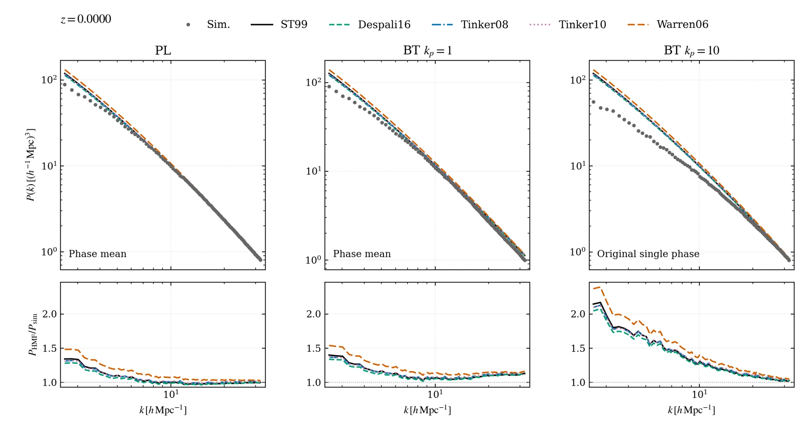
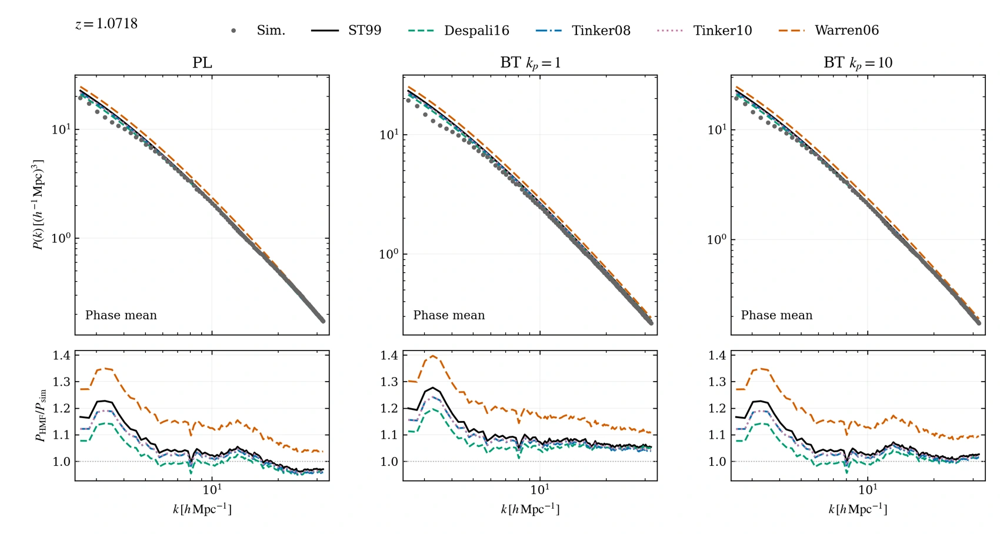
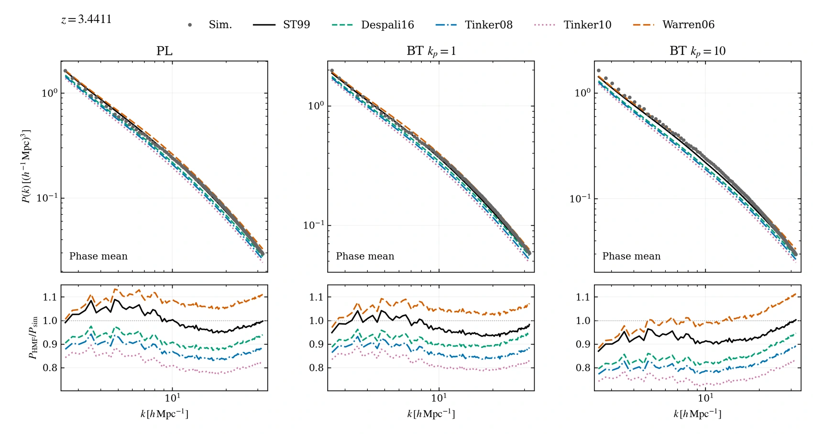
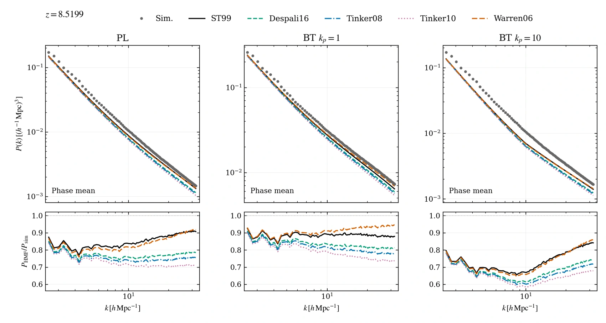

POWER SPECTRUM / DIAGNOSTICS
HMF 理论与模拟
2026-10-22 / SIMULATION BASELINE
以模拟为基准比较 HMF 理论
比较 ST99、Despali16、Tinker08、Tinker10、Warren06 的 HMcode 结果。上排叠加模拟功率谱，下排改用模拟作分母，不再除以 ST99。每个 PL 或 BT 模型使用自己的线性输入谱，没有重新拟合或修正模拟数据。
优先使用原相位与反相位的功率谱平均值，图中标为 Phase mean。BT kp=10 的 z=0 目前仍用 Original single phase，不能当作相位平均。所有比较使用相同的模拟 k 点；仅对理论谱作 log-log 插值，不对模拟作插值或外推。
这些曲线是 HMF 设置敏感性测试，不是重新校准的 HMcode2020。原生代码还会选择对应的 bias；其他晕模型设置保持原测试口径。Warren06 的 FoF 质量未转换，Tinker 的原生红移演化在 z=3 截止，高红移应用涉及外推。Reed07 实验混合模型未纳入。
沿用当前模拟图的显示点，k 约为 2.5367–31.9198 h Mpc−1，不是已验证的可信区间，也没有按与理论的一致程度删点。
z = 0


z = 1.0717968601


z = 3.4410805658


z = 8.5198506052
